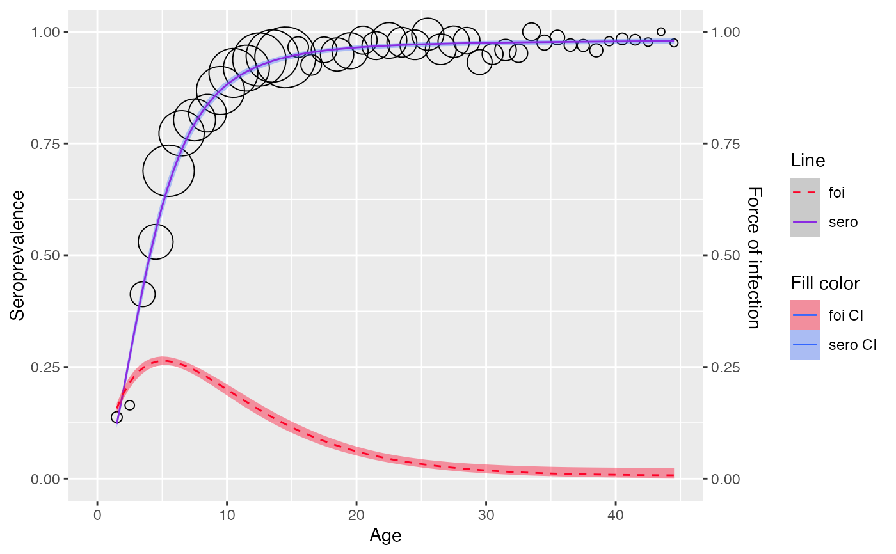

Fit age-stratified seroprevalence to parametric hierarchical Bayesian models. Supported models including Farrington model (2 and 3 parameters variants) and Log Logistic model
Value
a list of class hierarchical_bayesian_model with 6 items
- datatype
type of datatype used for model fitting (aggregated or linelisting)
- df
the dataframe used for fitting the model
- type
type of bayesian model far2, far3 or log_logistic
- info
parameters for the fitted model
- sp
seroprevalence
- foi
force of infection
- sp_func
function to compute seroprevalence given age and model parameters
- foi
function to compute force of infection given age and model parameters
Details
Consider a model for prevalence that has a parametric form \(\pi(a_i, \alpha)\) where \(\alpha\) is a parameter vector
Under a Bayesian framework, we can constraint the parameter space of the prior distribution \(P(\alpha)\) to achieve monotonicity of the posterior distribution \(P(\pi_1, \pi_2, ..., \pi_m|y,n)\)
Where:
- \(n = (n_1, n_2, ..., n_m)\) and \(n_i\) is the sample size at age \(a_i\)
- \(y = (y_1, y_2, ..., y_m)\) and \(y_i\) is the number of infected individual from the \(n_i\) sampled subjects
For Farrington model with 3 parameters, prevalence is formulated as follow
$$ \pi (a) = 1 - exp\{ \frac{\alpha_1}{\alpha_2}ae^{-\alpha_2 a} + \frac{1}{\alpha_2}(\frac{\alpha_1}{\alpha_2} - \alpha_3)(e^{-\alpha_2 a} - 1) -\alpha_3 a \} $$
The likelihood model is defined as \(y_i \sim Bin(n_i, \pi_i), \text{ for } i = 1,2,3,...m\)
The constraint on the parameter space can be incorporated by assuming truncated normal distribution for the components of \(\alpha\), \(\alpha = (\alpha_1, \alpha_2, \alpha_3)\) in \(\pi_i = \pi(a_i,\alpha)\)
The flat hyperpriors are defined as \(\mu_j \sim \mathcal{N}(0, 10000)\) and \(\tau^{-2}_j \sim \Gamma(100,100)\)
For Farrington model with 2 parameters, it is equivalent to the previous model with \(\alpha_3 = 0\)
For Log logistic model, seroprevalence is instead defined as
$$\pi(a) = \frac{\beta a^\alpha}{1 + \beta a^\alpha}, \text{ } \alpha, \beta > 0$$
The likelihood is similarly defined as \(y_i \sim Bin(n_i, \pi_i))\)
The prior model of \(\alpha_1\) is specified as \(\alpha_1 \sim \text{truncated } \mathcal{N}(\mu_1, \tau_1)\) with flat hyperpriors as in Farrington model
\(\beta\) is constrained to be positive by specifying \(\alpha_2 \sim \mathcal{N}(\mu_2, \tau_2)\)
Refer to section Chapter 10.3 of the the book by Hens et al. (2012) for further details.
References
Hens, Niel, Ziv Shkedy, Marc Aerts, Christel Faes, Pierre Van Damme, and Philippe Beutels. 2012. Modeling Infectious Disease Parameters Based on Serological and Social Contact Data: A Modern Statistical Perspective. tatistics for Biology and Health. Springer New York. doi:10.1007/978-1-4614-4072-7 .
Examples
# \donttest{
df <- mumps_uk_1986_1987
model <- hierarchical_bayesian_model(df, type="far3")
#>
#> SAMPLING FOR MODEL 'fra_3' NOW (CHAIN 1).
#> Chain 1: Rejecting initial value:
#> Chain 1: Log probability evaluates to log(0), i.e. negative infinity.
#> Chain 1: Stan can't start sampling from this initial value.
#> Chain 1:
#> Chain 1: Gradient evaluation took 0.000191 seconds
#> Chain 1: 1000 transitions using 10 leapfrog steps per transition would take 1.91 seconds.
#> Chain 1: Adjust your expectations accordingly!
#> Chain 1:
#> Chain 1:
#> Chain 1: Iteration: 1 / 5000 [ 0%] (Warmup)
#> Chain 1: Iteration: 500 / 5000 [ 10%] (Warmup)
#> Chain 1: Iteration: 1000 / 5000 [ 20%] (Warmup)
#> Chain 1: Iteration: 1500 / 5000 [ 30%] (Warmup)
#> Chain 1: Iteration: 1501 / 5000 [ 30%] (Sampling)
#> Chain 1: Iteration: 2000 / 5000 [ 40%] (Sampling)
#> Chain 1: Iteration: 2500 / 5000 [ 50%] (Sampling)
#> Chain 1: Iteration: 3000 / 5000 [ 60%] (Sampling)
#> Chain 1: Iteration: 3500 / 5000 [ 70%] (Sampling)
#> Chain 1: Iteration: 4000 / 5000 [ 80%] (Sampling)
#> Chain 1: Iteration: 4500 / 5000 [ 90%] (Sampling)
#> Chain 1: Iteration: 5000 / 5000 [100%] (Sampling)
#> Chain 1:
#> Chain 1: Elapsed Time: 14.352 seconds (Warm-up)
#> Chain 1: 9.864 seconds (Sampling)
#> Chain 1: 24.216 seconds (Total)
#> Chain 1:
#> Warning: There were 1592 divergent transitions after warmup. See
#> https://mc-stan.org/misc/warnings.html#divergent-transitions-after-warmup
#> to find out why this is a problem and how to eliminate them.
#> Warning: Examine the pairs() plot to diagnose sampling problems
#> Warning: The largest R-hat is 1.1, indicating chains have not mixed.
#> Running the chains for more iterations may help. See
#> https://mc-stan.org/misc/warnings.html#r-hat
#> Warning: Bulk Effective Samples Size (ESS) is too low, indicating posterior means and medians may be unreliable.
#> Running the chains for more iterations may help. See
#> https://mc-stan.org/misc/warnings.html#bulk-ess
#> Warning: Tail Effective Samples Size (ESS) is too low, indicating posterior variances and tail quantiles may be unreliable.
#> Running the chains for more iterations may help. See
#> https://mc-stan.org/misc/warnings.html#tail-ess
model$info
#> mean se_mean sd 2.5%
#> alpha1 1.351446e-01 0.001908827 5.986807e-03 1.291964e-01
#> alpha2 1.936494e-01 0.002048075 7.600068e-03 1.853524e-01
#> alpha3 5.538516e-03 0.001202519 5.641697e-03 5.948210e-04
#> tau_alpha1 2.017864e-01 0.055127798 7.266263e-01 7.641760e-06
#> tau_alpha2 3.293992e+00 1.968459526 4.210623e+00 5.832031e-06
#> tau_alpha3 1.773174e-01 0.029253530 2.056883e-01 1.072529e-05
#> mu_alpha1 -1.338585e+00 2.824494357 3.236840e+01 -4.837896e+01
#> mu_alpha2 1.410686e+00 1.749231740 3.182208e+01 -7.641900e+01
#> mu_alpha3 8.290121e-01 0.952377471 2.649894e+01 -5.022683e+01
#> sigma_alpha1 8.188036e+01 6.813335873 2.287436e+02 6.002446e-01
#> sigma_alpha2 1.012124e+02 48.138072719 1.724572e+03 2.690433e-01
#> sigma_alpha3 6.133872e+01 25.854935128 9.770551e+02 1.151942e+00
#> lp__ -2.534072e+03 0.686220129 3.525469e+00 -2.543262e+03
#> 25% 50% 75% 97.5%
#> alpha1 1.307298e-01 1.316978e-01 1.393965e-01 0.1492842
#> alpha2 1.885394e-01 1.899387e-01 1.977874e-01 0.2127821
#> alpha3 2.257121e-03 3.106263e-03 6.859552e-03 0.0218450
#> tau_alpha1 1.420877e-04 3.008879e-04 7.900818e-03 2.7757031
#> tau_alpha2 4.633870e-03 8.334051e-01 5.337058e+00 13.8151496
#> tau_alpha3 1.245686e-02 1.111496e-01 2.785034e-01 0.7535971
#> mu_alpha1 -1.298306e+01 -6.892387e+00 5.928178e-01 89.9186710
#> mu_alpha2 -5.030868e-01 2.096952e-01 8.574982e-01 84.1661755
#> mu_alpha3 -2.668128e+00 4.897369e-02 2.664738e+00 64.2703416
#> sigma_alpha1 1.125033e+01 5.764979e+01 8.389224e+01 361.8472967
#> sigma_alpha2 4.328616e-01 1.095469e+00 1.469028e+01 414.1096343
#> sigma_alpha3 1.894893e+00 2.999481e+00 8.959777e+00 305.6131627
#> lp__ -2.535691e+03 -2.533125e+03 -2.531879e+03 -2529.0440205
#> n_eff Rhat
#> alpha1 9.836879 1.0292465
#> alpha2 13.770298 1.0170368
#> alpha3 22.010805 1.0075450
#> tau_alpha1 173.732430 1.0049775
#> tau_alpha2 4.575512 1.1962010
#> tau_alpha3 49.438173 1.0162824
#> mu_alpha1 131.329140 1.0044878
#> mu_alpha2 330.950067 0.9998506
#> mu_alpha3 774.174091 1.0003181
#> sigma_alpha1 1127.141113 0.9999721
#> sigma_alpha2 1283.468361 1.0004305
#> sigma_alpha3 1428.075538 1.0005080
#> lp__ 26.394102 0.9999999
plot(model)

# }